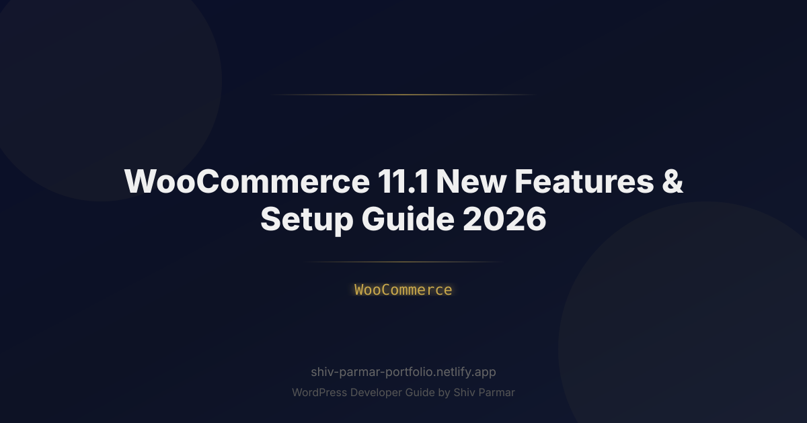

WooCommerce 11.1: New Features & Setup Guide 2026
Table of Contents
Hello, store owners and fellow developers! I'm Shiv Parmar, a WordPress developer with 4+ years of experience building and maintaining WooCommerce stores for clients worldwide. WooCommerce 11.1 is a bigger point release than most: it reworks the product collection experience, brings a native fields editor to block checkout, adds built-in AI product descriptions, and ships a rebuilt analytics dashboard. In this guide I'll walk through every important new feature, show you exactly where to enable it, and share the pre-update checklist I run on live client stores before touching production.
If you are upgrading from 11.0 or coming in from an older version, treat this article as your release playbook. Every feature below comes with a short explanation, the exact admin path to enable it, and where it helps a small code snippet you can drop into a child theme or custom plugin.
What's New in WooCommerce 11.1
WooCommerce 11.1 focuses on three themes: a modern product browsing experience, a code-free checkout workflow, and better decision-making data. Here is the full rundown of what shipped and how to switch each feature on:
| Feature | What's New | How to Enable |
|---|---|---|
| Product Collection Block revamp | Grid, list, and gallery layouts with built-in filtering, pagination, and nested blocks | Insert the "Product Collection" block in the editor; no extra settings required |
| Block checkout fields editor | Add, rename, reorder, and validate checkout fields without touching PHP | WooCommerce → Settings → Blocks → Checkout |
| AI product descriptions | Generate product copy, image alt text, and meta descriptions from the admin | WooCommerce → Settings → AI, then connect your provider and key |
| Rebuilt Analytics Overview | Unified revenue, orders, and top-products dashboard with period comparisons | WooCommerce → Analytics → Overview |
| HPOS enabled by default | New installs use custom order tables; existing stores get a guided migration tool | WooCommerce → Settings → Advanced → Features |
| Smart coupon bulk creation | Generate hundreds of unique coupon codes from a single reusable template | Marketing → Coupons → Generate coupon codes |
| Lazy-loaded cart assets | Cart and mini-cart JavaScript now loads only on cart-related pages | Automatic after the update; no action required |
Most of these features are active immediately after the update, but three of them deserve a settings visit: the checkout fields editor, the AI provider connection, and the HPOS migration prompt. If you sell with third-party shipping or tax logic, test those flows before you announce the upgrade to your customers.
Before You Update: Pre-Update Checklist
I never update a client's live store without running this checklist first. It takes about twenty minutes and prevents almost every upgrade problem I've been called in to fix:
- Clone production to staging. Run the upgrade on an exact copy of the live store, including the database, so you can test with real data safely.
- Back up everything. Export the database and zip the
wp-contentdirectory. Store the backup somewhere off the server, not just in a plugin folder. - Check extension compatibility. Open each payment, shipping, and pricing extension and confirm the vendor lists WooCommerce 11.1 as tested. Payment gateways matter most; compare your options in the payment gateway comparison guide.
- Review theme template overrides. If your theme overrides
cart,checkout, orsingle-producttemplates, diff them against the new default templates. - Clear all caches. Purge your page cache, object cache, and any CDN cache before and after the update so stale JavaScript doesn't mask real issues.
- Record a performance baseline. Note your current product page load time so you can prove the new lazy-loaded cart assets actually helped.
Pro Tip: Even when a changelog looks boring, run the update on staging first. I have seen a minor release break a checkout field that a third-party plugin had silently overridden for years.
How to Update to WooCommerce 11.1
Once staging is ready, the actual update is straightforward. Follow these steps in order:
- Put the store in maintenance mode so no orders are written during the database upgrade routine.
- Update from the dashboard: go to Plugins, hover over WooCommerce, and click Update Now. WordPress will run the internal database update automatically.
- Respond to the HPOS prompt. If the store is still on legacy order tables, WooCommerce will offer a guided migration. Do it now rather than postponing it through another release cycle.
- Check WooCommerce → Status. Resolve every item marked Critical or Warning, especially related to PHP version, deprecated functions, and template overrides.
- Smoke test the whole funnel: browse categories, open a product, add to cart, apply a coupon, and complete a purchase in gateway sandbox mode.
- Purge caches and re-test on mobile. The lazy cart assets only help if your caching layer isn't serving old bundles.
Updating with WP-CLI (for developers)
If you manage multiple stores, automate the upgrade over WP-CLI instead of clicking through wp-admin:
# Export a database snapshot before touching anything
wp db export pre-woocommerce-11.1.sql
# Update the plugin and run the WooCommerce database routine
wp plugin update woocommerce
wp wc update
# Verify the active version
wp plugin get woocommerce --field=versionSetting Up the New Features
Updating is only half the job. Here is how I configure the headline features on a real store after the version bump.
1. Product Collection Block
Edit any page or product archive, remove the legacy Products block, and insert the new Product Collection block. Pick a layout, then configure the built-in query controls: number of columns, products per page, ordering, and filters. Unlike the old block, filtering and pagination now ship in the box, so stores that previously needed a plugin for basic faceted browsing can often drop it. If you still run a dedicated filter plugin, keep it and read the product filter setup guide before switching layouts.
You can tweak the default query from code when the editor settings are not enough:
<?php
// Adjust Product Collection defaults for the front page.
add_filter( 'woocommerce_product_collection_query_args', function ( $args ) {
if ( is_front_page() ) {
$args['posts_per_page'] = 12;
$args['orderby'] = 'date';
$args['order'] = 'DESC';
}
return $args;
} );2. Block Checkout Fields Editor
Go to WooCommerce → Settings → Blocks → Checkout. From here you can add fields, rename labels, mark fields required, reorder them with drag and drop, and attach basic validation rules — no snippets required. Two practical tips: keep the number of fields low because every extra field costs conversion rate, and if you add a field for a payment provider (a VAT number, for example), test it against every gateway you support before going live.
3. AI Product Descriptions
Visit WooCommerce → Settings → AI, connect your provider, and store the API key. A "Generate with AI" button then appears in the product editor and in the bulk edit screen, letting you draft descriptions, short summaries, and image alt text in your brand voice. Always review generated copy before publishing. For a deeper look at wiring AI into WordPress beyond WooCommerce, read the full guide to adding AI to WordPress.
4. Analytics Overview
The rebuilt Overview screen under WooCommerce → Analytics combines net sales, orders, average order value, and top products on a single dashboard with period comparisons. Set your reporting schedule and export the data your fulfillment team needs weekly. Inventory decisions get easier when sales velocity sits next to stock levels, so pair this screen with a proper inventory management workflow.
WooCommerce 11.0 vs 11.1: What Changed
If you are deciding whether the upgrade is worth the effort, this comparison summarizes the practical differences:
| Area | WooCommerce 11.0 | WooCommerce 11.1 |
|---|---|---|
| Product listings | Legacy Products block plus shortcodes | Product Collection block with filters and pagination built in |
| Checkout customization | PHP snippets or third-party field plugins | Native block checkout fields editor |
| Order storage | HPOS optional | HPOS default for new installs, guided migration for existing stores |
| Analytics | Separate report screens | Unified Overview dashboard with comparisons |
| AI features | Only via third-party plugins | Built-in product description generation |
| Cart JavaScript | Loaded on every page | Lazy-loaded on cart-related pages only |
| Recommended PHP | 7.4 or newer | 8.1 or newer |
Best Practices After Updating
The days after an upgrade are when small oversights turn into support tickets. I follow these habits on every store I maintain:
- Re-run your smoke tests daily for a week. Scheduled tasks, abandoned cart emails, and stock alerts only reveal problems after they fire.
- Re-check tax and shipping logic. Rates, zones, and rounding rules are the first things a database routine can surprise you with; keep your tax settings and shipping zone setup documented so you can compare before and after.
- Measure performance again. Compare product page speed against your baseline with a real user monitoring tool, and investigate rendering or caching regressions immediately if the numbers slipped.
- Review extension logs. Payment and shipping plugins often log deprecation warnings a full release before they break.
- Update your staging copy from production again so the next emergency fix is tested against fresh data.
- Communicate with your team. A one-page note about the new checkout editor and AI button saves you from being asked where things moved.
Common Mistakes to Avoid
- Updating straight on production without a backup. Backups take minutes; restoring a corrupted database without one can take days.
- Ignoring the PHP version requirement. WooCommerce 11.1 expects a modern PHP runtime; check WooCommerce → Status and upgrade PHP before the plugin, not after.
- Enabling HPOS with incompatible extensions. Run the compatibility check and update or replace anything that still writes order data through legacy postmeta.
- Leaving the AI provider unconfigured but visible. If you do not plan to use AI descriptions, hide the button so editors do not burn API credits by curiosity.
- Skipping mobile checkout testing. Field reordering in the block editor can push a required field below the fold on small screens.
- Forgetting cache invalidation. Lazy-loaded cart assets plus stale CDN caches equal confusing cart errors for your first visitors after launch.
Conclusion
WooCommerce 11.1 is the kind of release that quietly removes work from your plate: product browsing no longer needs extra plugins, checkout fields no longer need snippets, and analytics finally live in one screen. The upgrade itself is simple, but the stores that benefit most are the ones that prepare with staging, backups, and a real test plan instead of clicking Update and hoping for the best.
If you would rather hand the upgrade to someone who has done it many times, I offer WordPress development services covering WooCommerce upgrades, performance tuning, and custom feature work. Either way: test first, update with a plan, and let the new features earn their place in your workflow.
Frequently Asked Questions
Should I update to WooCommerce 11.1 right away?
If your store runs WooCommerce 11.0 with current extensions, update early in the release cycle, but only after testing on a staging clone. Stores with heavy customization or unmaintained plugins should wait until each vendor confirms 11.1 compatibility, then follow the checklist in this guide before touching production.
Does WooCommerce 11.1 require PHP 8.1?
WooCommerce 11.1 recommends PHP 8.1 or newer. Check the version shown under WooCommerce, then Status, before updating. If your host still runs PHP 7.4 or 8.0, upgrade PHP first, because running the new release on an unsupported runtime is the most common cause of fatal errors after the update.
Is HPOS mandatory for existing stores in WooCommerce 11.1?
No. High-Performance Order Storage is the default for new installs, and existing stores receive a guided migration prompt, but legacy order tables still work during the transition. I still recommend migrating now, because HPOS-compatible extensions keep improving and postponing makes each future upgrade riskier.
How do I enable AI product descriptions in WooCommerce 11.1?
Go to WooCommerce, then Settings, then AI, choose your provider, and save your API key. The Generate with AI button then appears in the product editor and the bulk edit screen. Treat every generated draft as a starting point and edit it before publishing.
Will my payment gateways still work after updating?
Usually yes, if the gateway plugin lists WooCommerce 11.1 as tested. Always complete one sandbox transaction per gateway after the update and confirm webhook URLs still point at the right endpoints, because silent webhook failures are the classic post-upgrade checkout bug.